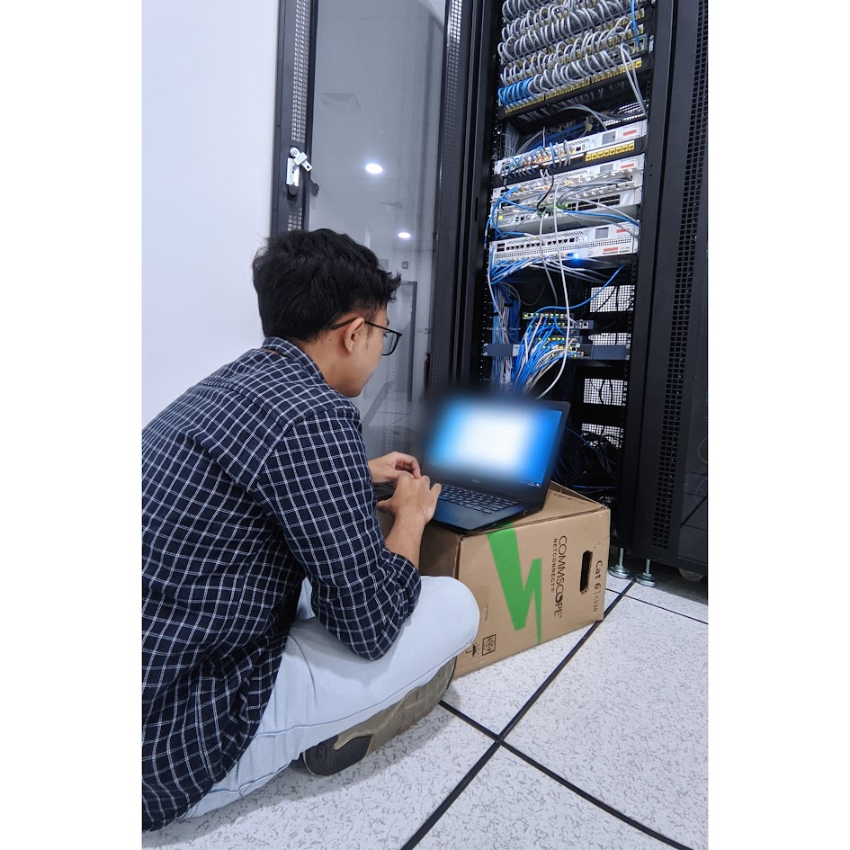
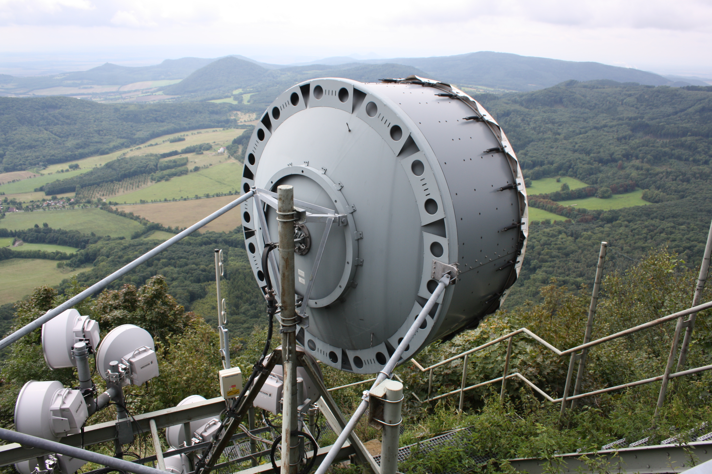
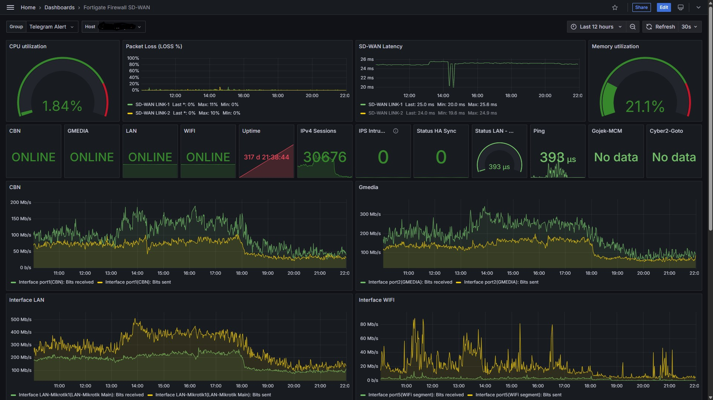
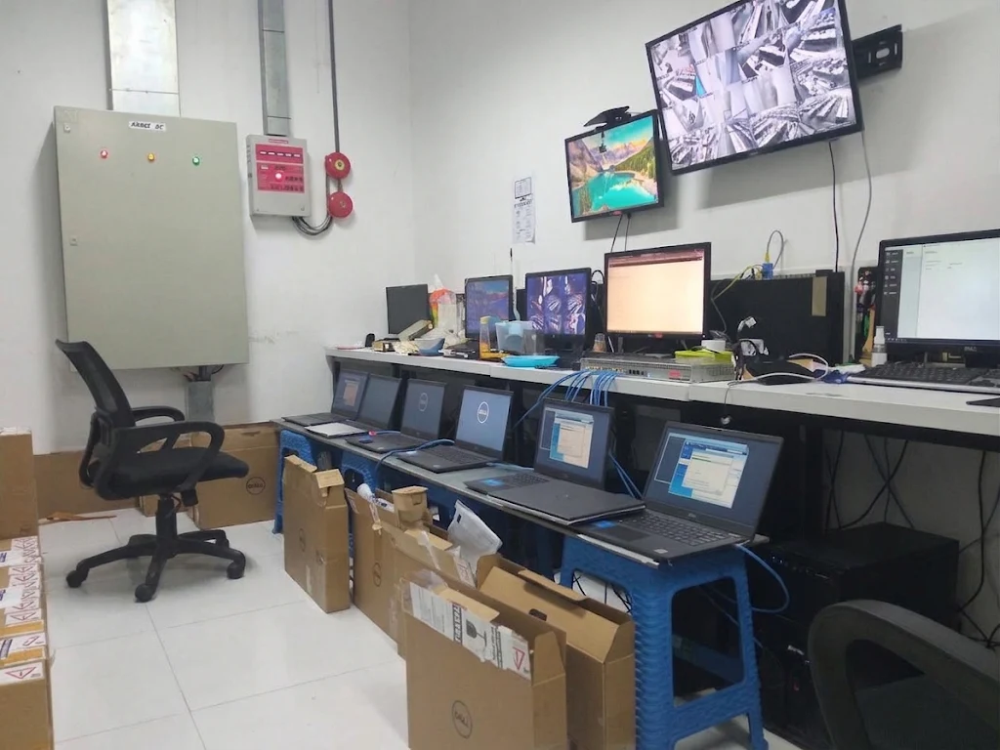
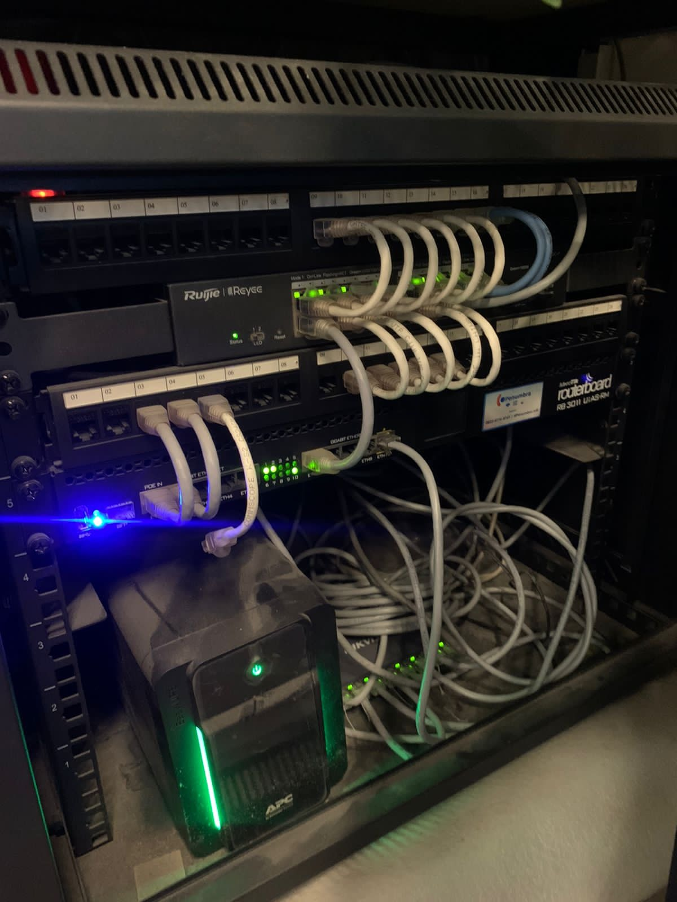
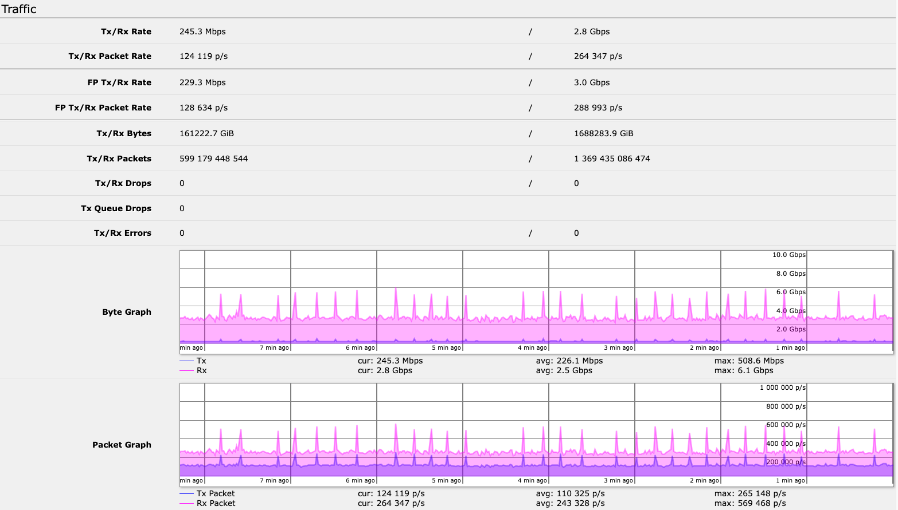

Mukhamad Anang Thoyfur
I'm
About
An IT professional with over 8 years of experience in IT Infrastructure and Network Engineering, working in enterprise environments where system reliability and security are critical. My core strength lies in managing and improving IT infrastructure, with strong hands-on experience in network design, implementation, and troubleshooting.
I have worked extensively with LAN/WAN, VLAN, enterprise Wi-Fi, Fortinet firewalls, MikroTik routers, Cisco switches, and VMware virtualized environments, as well as Linux and Windows server administration. I am experienced in information security practices aligned with ISO 27001 and regularly collaborate with cross-functional teams to support business operations.
While my background includes IT support, my current focus is on infrastructure and network-driven roles, where I can contribute to building secure, stable, and scalable IT systems.

IT Infrastructure Engineer
As an IT Infrastructure Engineer, I focus on maintaining and improving core IT systems to ensure availability, security, and operational stability. I work with Linux/Windows server environments, VMware virtualization, proactive monitoring (Zabbix, Grafana, Prometheus), and infrastructure security, while aligning implementations with business requirements and information security standards such as ISO 27001.
Network Engineer
As a Network Engineer, I design, implement, and maintain secure and reliable network connectivity across office and multi-site environments. My responsibilities include managing LAN/WAN, 802.1Q VLAN, enterprise Wi-Fi, routing, switching (Cisco & MikroTik), and Fortinet firewall policies to ensure stable communication and proper network segmentation.
IT Support Specialist
As an IT Support Specialist, I ensure end users can work efficiently by providing timely technical assistance and resolving hardware, software, and network issues. I handle incident resolution based on strict SLA targets, device provisioning, and user guidance, serving as the frontline support to maintain daily operational continuity.
Resume
A summary of professional roles, certifications, responsibilities, and key projects across infrastructure, network, and IT operations.
Certifications
OCNA - Omada Certified Network Administrator (Routing & Switching)
Valid until Aug 29, 2028
TP-Link | Verification No: C23719E4100448DE
OCNA - Omada Certified Network Administrator (Wireless)
Valid until Jul 25, 2028
TP-Link | Verification No: D6484B5BFBED4486
Freelance Experience
Local Network Installation For PT Yektria Farma
Installation, configuration, and setup of local network infrastructure to ensure stable connectivity.
Local Network Installation For Purwadhika Digital School
Designed and deployed LAN/Wi-Fi network environment for learning facilities and staff.
Local Network Installation For Local Urban Planning
Implemented structured cabling and local network infrastructure for office operations.
Installation Microwave Radio for Indosat M2
Installed and aligned microwave radio devices for wireless backhaul connectivity.
Education
Universitas Amikom Yogyakarta
2014 - 2017
D3 Manajemen Informatika | GPA 3.44 / 4.00
SMK Syubbanul Wathon Magelang
2011 - 2014
Teknik Komputer dan Jaringan
Professional Experience
IT Infrastructure — PT Mitracomm Ekasarana (Phintraco Group)
Dec 2020 - Present
Semarang, Jawa Tengah, Indonesia
- Managed IT infrastructure in compliance with ISO 27001 standards, ensuring 99% uptime.
- Implemented and optimized LAN/WAN, VLAN, Wi-Fi, Fortinet firewall, and VMware server infrastructure.
- Enhanced data & network security, reducing security incidents by 30%.
- Delivered technical troubleshooting and support, resolving 95% of issues within SLA.
- Collaborated with cross-functional teams (Application, Operations, HR, General Affairs) to deliver scalable IT solutions.
IT Support — PT Saliman Riyanto Raharjo
Sep 2019 - Nov 2020
Semarang, Jawa Tengah, Indonesia
- Delivered technical support to 200+ users, ensuring smooth daily IT operations.
- Diagnosed and resolved hardware, software, and network issues to improve handling efficiency.
- Installed, configured, and maintained user devices, operating systems, and core applications.
- Conducted user training and provided technical guidance to enhance productivity.
UPT Staff — SMK Syubbanul Wathon
Aug 2017 - Sep 2019
Magelang, Jawa Tengah, Indonesia
- Designed and managed IT infrastructure supporting Computer Network & Multimedia programs.
- Provided technical support for staff and students, resolving network, system, and hardware issues.
- Installed and configured servers, network devices, and educational software.
- Ensured system reliability through routine maintenance, updates, and IT inventory management.
Portfolio
A selection of infrastructure and network projects I have executed in enterprise and field environments, focusing on reliability, security, and operational efficiency.
- All
- IT Infrastructure
- Network Engineer
- IT Support Specialist














Services
End-to-end infrastructure and network engineering solutions delivered for enterprise environments and independent projects, built for high availability, security, and scalability.
IT Infrastructure & Server Setup
Deployment and administration of Linux/Windows servers, VMware virtualization platforms, and core data center infrastructure engineered for 99%+ uptime and long-term operational stability.
Network Architecture & Installation
End-to-end design and physical deployment of LAN/WAN, 802.1Q VLAN segmentation, routing & switching (Cisco, MikroTik, TP-Link Omada), enterprise Wi-Fi, structured cabling, and microwave links.
Security Hardening & ISO 27001
Implementation of Fortinet firewall policies, VPN tunneling, access control, and server hardening aligned with ISO 27001 standards to protect enterprise assets and reduce security incidents.
Monitoring & Bandwidth Optimization
Real-time observability using Zabbix, Grafana, and Prometheus combined with MikroTik PCQ/QoS traffic shaping to eliminate bottlenecks and ensure fair bandwidth distribution.
Incident Diagnostics & Root Cause Analysis
Rapid layer-by-layer network and system troubleshooting in live production environments, complete with structured Root Cause Analysis (RCA) documentation to prevent recurring downtime.